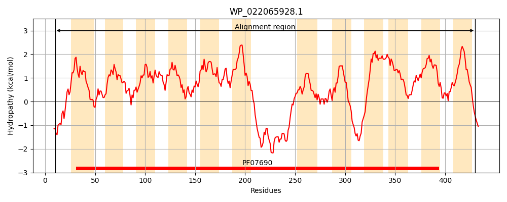
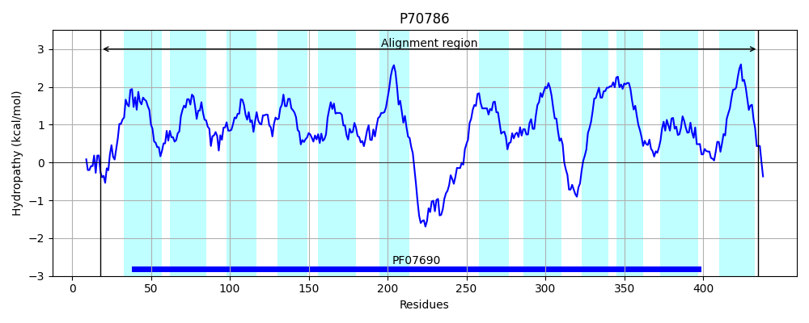
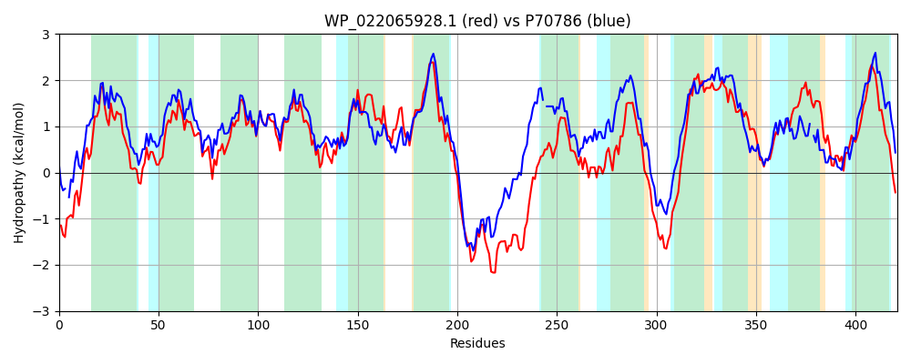

Hit Accession: P70786
Hit TCID: 2.A.1.14.3
Hit Description: gnl|BL_ORD_ID|11301 gnl|TC-DB|P70786|2.A.1.14.3 Putative tartrate transporter - Agrobacterium vitis.
Mach Len: 421
e:0.000000
Query TMS Count : 12
Hit TMS Count: 12
TMS-Overlap Score: 10.600000
Predicted Substrates:CHEBI:35396;tartrate
BLAST Alignment:
Score: 957 , Bit scores: 373 bits, E-value: 2.7e-126, Alignment length: 421, Percentage identity: 44
Query: 10 IDNDALEKETMRRVIWRILPFLVVSYLVSIIDRGNIGMAALQMNEDLGLSKAAFGFASSLYFVAYFIFEVPSNLAMQKVGARLWIPRIMISWGVVSMCMALVQNTTSLYIVRFLLGAAEAGFFPGVVLYLTWWIPSRYRARIIASFMVAIPLANFIGSPLSGLILMLDGWLGLRGWHLLFIIEGLPAVLLGIAAFFILRDRPHQAGWLNDRQKTWLENTLQAERQQQKQIGHTTTWQLLKHRQIWLMALIYAGASSAGTTLSVWSPQLLKSFHLDNLTTGLLNAIPYGLASVLMIVWGRSSDRKNERRWHTALTLFMIAAGVFAAFINLSLPATIMILSTILIGAYAAKGPFWALASGWMSSTSAAAGLAAIGAIANLIGGAVMVNAYGIISERTGSHTLAMLPLAALCLAGGIAVLAMGR 430
+ ND LE +R++ +RI+PF+++ Y ++ +DR NIG AAL MN+DLG S FG + ++FV YF+FEVPSNL + KVGAR+WI R+MI+WG+VS MA VQ TTS YI+RFLLG AEAGFFPG++LYL++W P+R RA + A FM A PL+ +GSP+SG ++ + G +GL GW +F+IE PA++LG+ F L DRP +A WL + ++ WL T+ AE+ + H+ L R I +AL+Y G S+ TL +W+PQ++K F L + G +NA+P A V M++W R SDR ER WH + AAG+ A S+ ++ L+ + +G +K P W++ + ++S +AAAG+A I +I NL GG V + G I + TGS T + +A L L I L + R
Sbjct: 18 VTND-LEARVLRKITFRIVPFIMLLYFIAFLDRVNIGFAALTMNQDLGFSSTVFGIGAGIFFVGYFLFEVPSNLILNKVGARIWIARVMITWGIVSGLMAFVQGTTSFYILRFLLGVAEAGFFPGIILYLSFWFPARRRAAVTALFMAAAPLSTVLGSPISGALMEMHGLMGLAGWQWMFLIEAAPALILGVVVLFFLTDRPEKAKWLTEEERNWLVKTMNAEQAGRGTASHSVMAGLADIRVI-ALALVYFGTSAGLYTLGIWAPQIIKQFGLSAIEVGFINAVPGIFAVVAMVLWARHSDRTGERTWHVVGACLLAAAGLAFAAGATSVFMVLIALTIVNVGISCSKPPLWSMPTMFLSGPAAAAGIATINSIGNL-GGFVGPSMIGWIKDTTGSFTGGLYFVAGLLLISAILTLILAR 435 | Protein Hydropathy Plots: |
|---|
|  |  |
Pairwise Alignment-Hydropathy Plot:
|
|---|
|  |